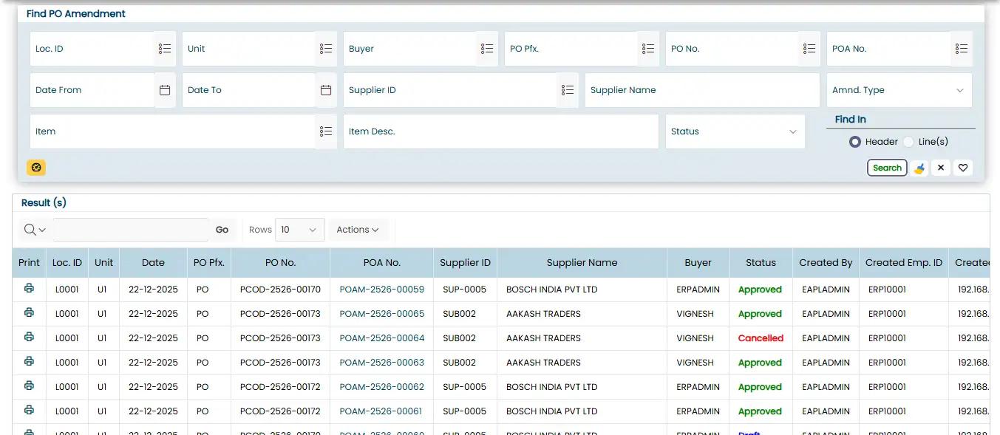
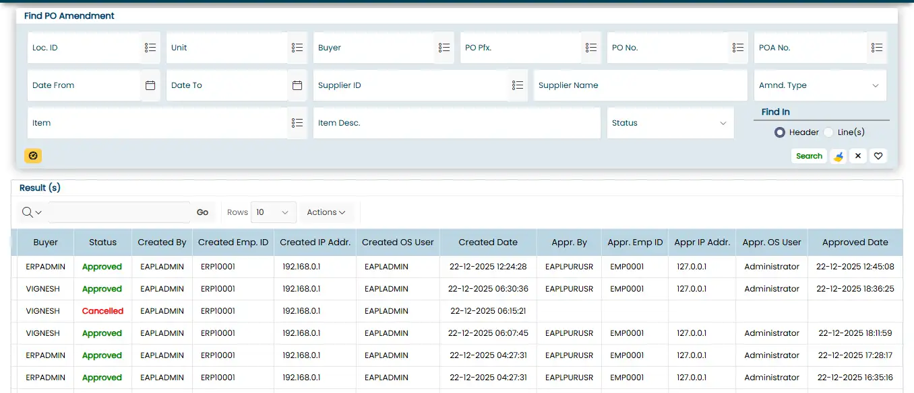

<div data-category="Operating Instructions" data-title="How to navigate through the records" data-updated="December 01, 2025" data-contributors="RoadmapIT" data-breadcrumb="Home,Operating Instructions,How to navigate through the records">
  <div class="page-content">
    <p>Click on the navigation icons for navigating through the queried set of data.</p>
    <!-- Record Navigation -->
    <h2>Move to the next record</h2>
    <ul style="list-style-type: none; align-content: center">
      <li class="mouse-icon">Click on the navigation icons to move through the queried set of data.</li>
      <li class="mouse-icon">To move to the next record, click the next icon (&gt;).</li>
    </ul>
    
    <ul style="list-style-type: none; align-content: center">
      <li class="mouse-icon">To move to the previous record, click the previous icon (&lt;).</li>
    </ul>
    
  </div>
</div>